Web Admin Panel
Open http://<display-ip>/ to edit your dashboard. Find the IP under Settings → WiFi on the display or on its Home Assistant device page.
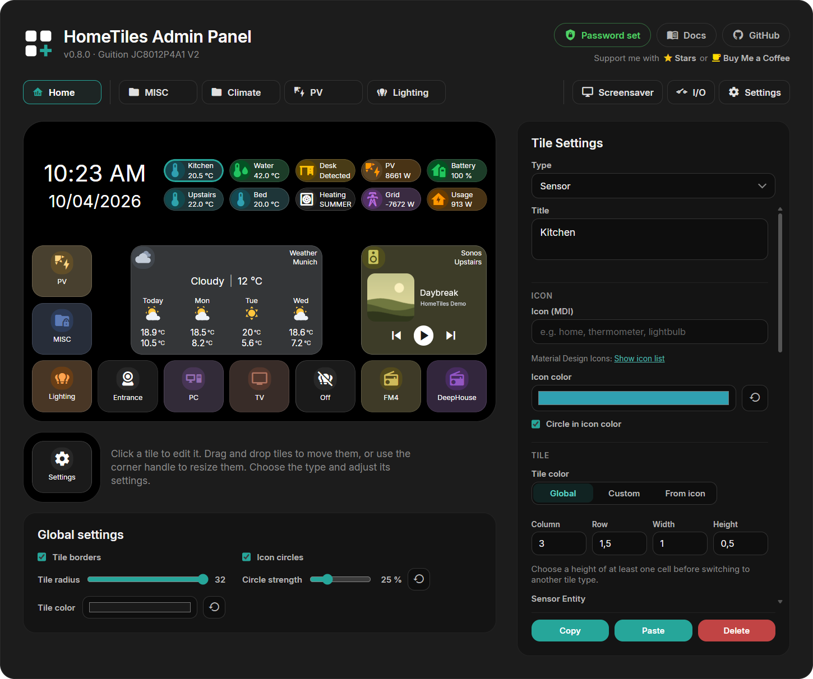
Select a tile in the grid preview to open its settings. Each folder has its own tab.
Changes save automatically
Tile edits save as you make them and appear on the display.
Creating a Tile
- Click an empty cell.
- Choose a Type.
- Select an entity where needed and adjust the tile.
Every tile has these settings:
- Title: optional label; press Enter for a second line. Both lines are centered together, and each line ends in
...if it exceeds the available width. The display, popup header, and live preview follow the tile's size. - Icon (MDI): a Material Design Icon name. Show icon list opens the catalog.
- Icon color: the icon's color; Reset restores the type's default. Circle in icon color tints the circle behind the icon. With Tile color set to From icon, the buttons take the circle's color too: the pressed close button, 7D, 24H and Today, the fields of Number, Select and Date/Time, the PIN keys, in the Media popup the pressed previous, next and volume buttons and the sliders, and on the Media and Climate tiles their buttons. With Global or Custom circle and buttons keep the color they have with From icon, so tile, circle and icon colors always match. Without the option, and with white, grey or black icons, circle and buttons stay neutral. Circle and buttons sit the same visible step above the tile for every color; an icon too dark to read on its circle is shown a little lighter in the same hue.
- Tile color: Global uses the global tile color, Custom your own color, and From icon tints the tile with the icon color. Strength sets how strongly.
- Column, Row, Width, Height: grid position and size in half steps.
New tiles with a colorable icon start with From icon at 20 %.
See Tile Types to choose the right type.
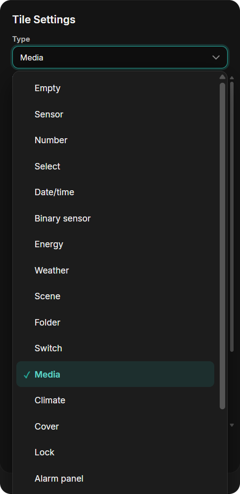
Type-specific settings
Fields depend on the selected type. A numeric Sensor offers:
| Field | Purpose |
|---|---|
| Entity | Sensor to display |
| Unit | Unit label, such as °C or W |
| Decimals | Decimal places |
| Value size | Size of the displayed value |
| Display mode | Text or a gauge with a minimum and maximum |
Number, Select, and Date/Time also offer Value size with the same choices as Sensor. In half-height tiles the value uses 20, 24, or 28. Their live values appear in the preview, including after switching folders or selecting another tile. Choose the matching entity and whether a tap or long press opens its popup.
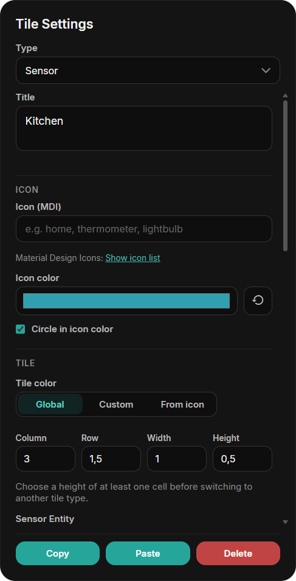
Global Settings
The Global settings below the preview apply to every tile on the display.
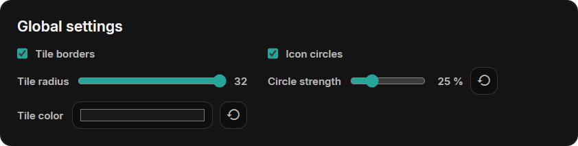
| Setting | What it does |
|---|---|
| Tile borders | Draws a thin border around the tiles. Clock, Text, and Back tiles can switch it off individually. |
| Tile radius | Corner radius of tiles, popups, and previews. The maximum makes half-height tiles fully round. |
| Icon circles | Shows a circle behind every icon. A tile can switch its own circle off. |
| Circle strength | How far the icon circles and the buttons stand out from the tile, from 0 to 100 %. |
| Tile color | Background of every tile whose tile color is Global. |
New displays start with the maximum radius and the tile color #1A1A1A.
Colors and Rules
Rules change the icon and tile color while an entity has a matching state. Set Rules to On in the tile settings; a tile with its own entity starts at Own entity and Own rules:
- Own entity / Other entity: follow the tile's own entity or any other entity selected in the Bridge. Scene, Folder, Back, Camera, Clock, and Text tiles have no entity of their own and always use another entity.
- Entity color: use the color the entity shows itself: a light's color, heating or cooling on a climate entity, and the state colors of switches, covers, and binary sensors.
- Own rules: choose the colors yourself, by value or by state (see below).
- Color icon / Tint tile: what the rule colors. Strength sets the tint.
While a rule matches, it wins. Otherwise the icon and tile colors above apply. Without a state, for example while Home Assistant is offline, the tile keeps its icon color.
Icon Color by Value
For Sensor, Energy, and Number tiles: a color bar between Min and Max. Smooth blends the colors, Steps changes at each marker. Start from Cold → Warm, Traffic light, Battery, Humidity, or Single color. Drag a marker to move it, click it to choose its color, and double-click the bar to add one (up to six).
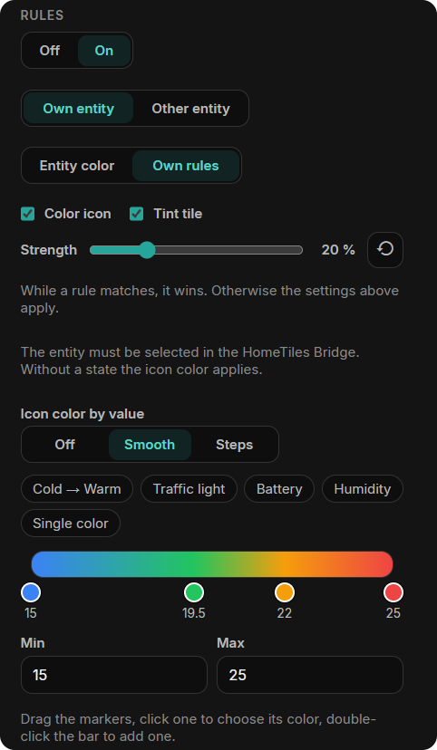
Icon Color by State
For Sensor, Binary Sensor, Select, and Date/Time tiles: up to six states, each with a color. A row matches the exact state, or any state containing its text when contains is ticked; upper and lower case do not matter, and the first match wins. Binary sensors have one color for On and one for Off. Unavailable states keep the default color.
In this example, a waste sensor says when to put the bin out, such as "Put out in 11 days". Its icon turns red while the state contains "today" and turquoise while it contains "11". With Tile color → From icon, the circle and the tile follow the icon color.
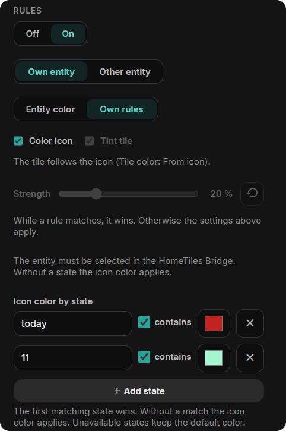
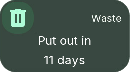
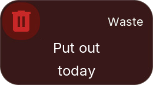
Editing Climate Mini-Tiles
Click a Climate mini-tile in the preview to edit it, or drag it to another slot. The outline shows whether you are selecting the parent tile or a mini-tile.
Choose temperature, humidity, targets, or mode. Automatic chooses values supported by the entity. Target is the single target temperature; Heating target and Cooling target are the two limits of devices that keep a range in Heat/Cool mode.
Resizing the parent changes the available slots. Mini-tiles that still fit keep their place; only those without room are hidden until the tile grows again.
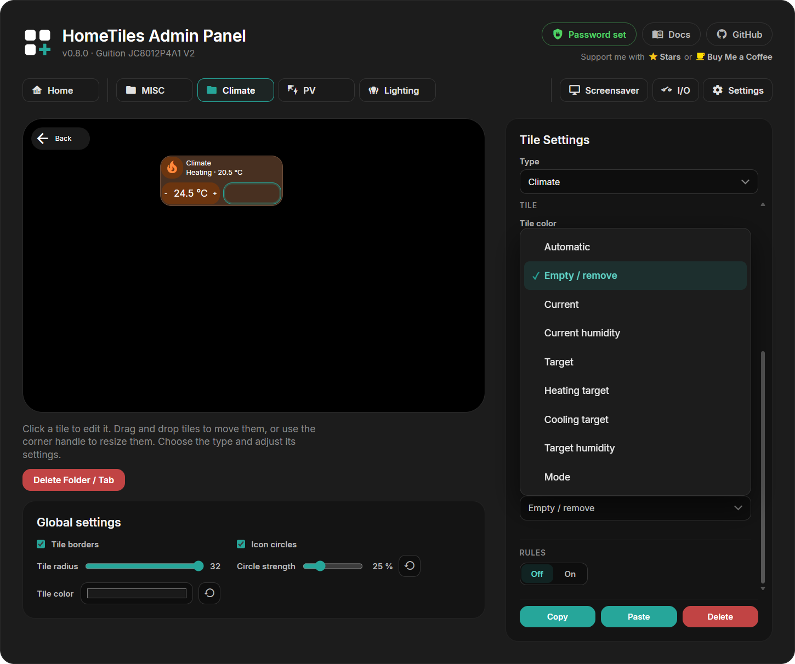
Moving, Resizing, Copying
- Move: drag a tile to another cell.
- Resize: drag its edge handles or enter Width / Height. Sizes change in half steps. Sensor, Binary Sensor, Energy, Scene, Folder, Back, Clock, Camera, and Settings tiles can also be half a cell high.
- Copy / Paste: duplicate a tile, including between folders. Paste onto an empty cell where the copied size fits; Settings and Back tiles cannot be replaced.
- Delete: clear a tile back to an empty cell.
Folders
Choose the Folder type to create a sub-page. It appears as a Web Admin tab and includes a back tile. A folder that still contains tiles keeps its type until you empty it; deleting the tile is still possible.
Delete Folder / Tab removes the folder and its tiles.
To protect a folder, select its tile, enable Protect this folder with a PIN, enter 4–8 digits, and press Apply PIN. The display then asks for the PIN before opening the folder. Folder PINs are stored only on that display and are excluded from exports.
A folder tile can also show the state of what is inside: with Rules → On, the climate entity, and Entity color, Color icon, and Tint tile, a Climate folder turns orange while heating and blue while cooling. In this example, the MISC folder is locked with a PIN.
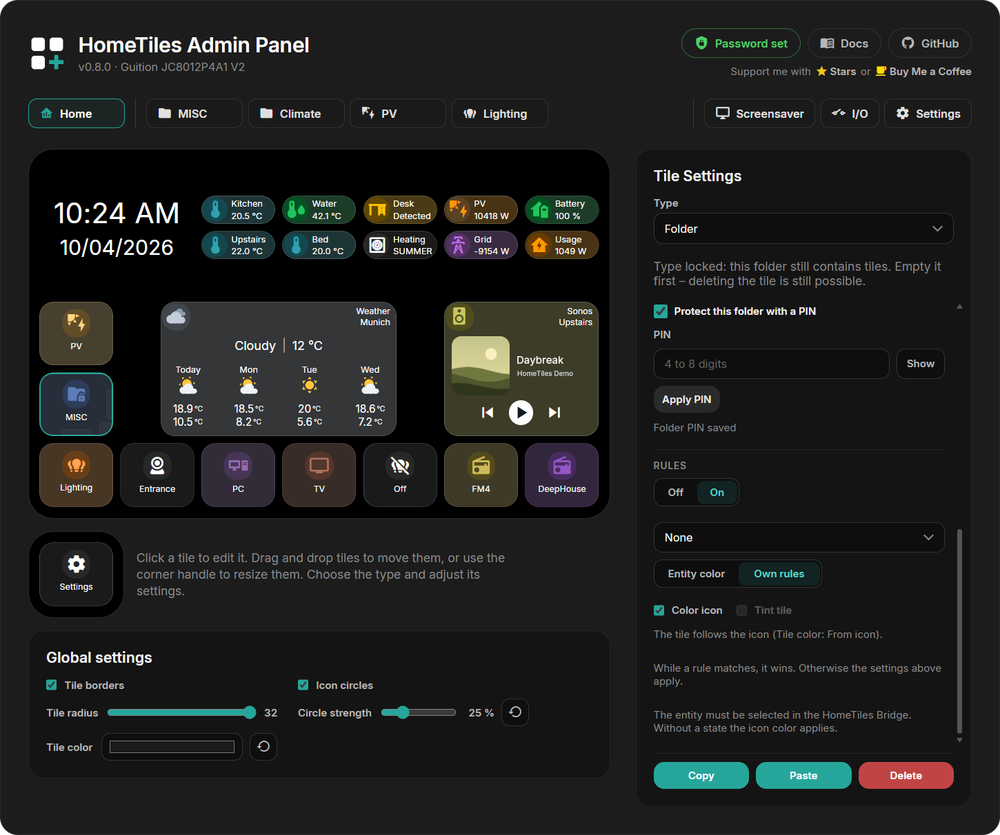
Back Tile
Select the back tile to change its icon, icon color, circle, and tile color. It can be moved like any tile, made half a cell high, and shown without a border by clearing Tile borders. Every folder keeps one back tile.
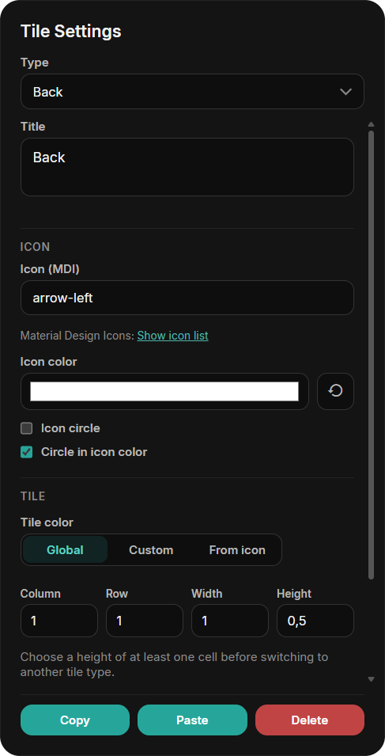
Settings Tile and Access
Select the Settings tile in the Home tab to set how Settings opens on the display:
- PIN protection: ask for a 4–8 digit PIN before Settings opens.
- Hide tile: remove the Settings tile from the Home grid. You can also drag the tile out of the grid into the field below the preview; this hides it and turns on the edge swipe.
- Open by edge swipe: open Settings by swiping inward from the chosen Swipe edge (left, right, top, or bottom). This also works while the tile is visible.
To show the tile again, drag it from the field below the preview back into a free Home area that fits its saved size. Its size is preserved, including 1×0.5.
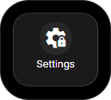
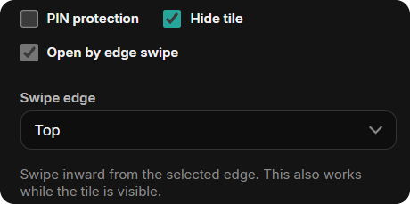
The public factory PIN 466384537 unlocks Settings and protected folders. This is a local child lock, not a login; protect the Web Admin itself with a Web Admin password. PINs are excluded from dashboard exports.
Screensaver Editor
Open the Screensaver tab. Select the background, clock, or a tile to edit it; drag to move and resize.
See the Screensaver guide for images, activation, and available tiles. Its Tile borders setting is independent of the global Tile borders for the normal dashboard.
Device Settings
The Settings tab contains:
- Network: WiFi credentials, connection type on Ethernet-capable devices, and an optional static IP shared by WiFi and Ethernet.
- MQTT: broker address, credentials, and topics; normally supplied by pairing.
- Localization: language, time zone, and date/time formats.
- Web Admin password: optional login for the Web Admin, see below.
- Built-in camera: on displays with a camera, see below.
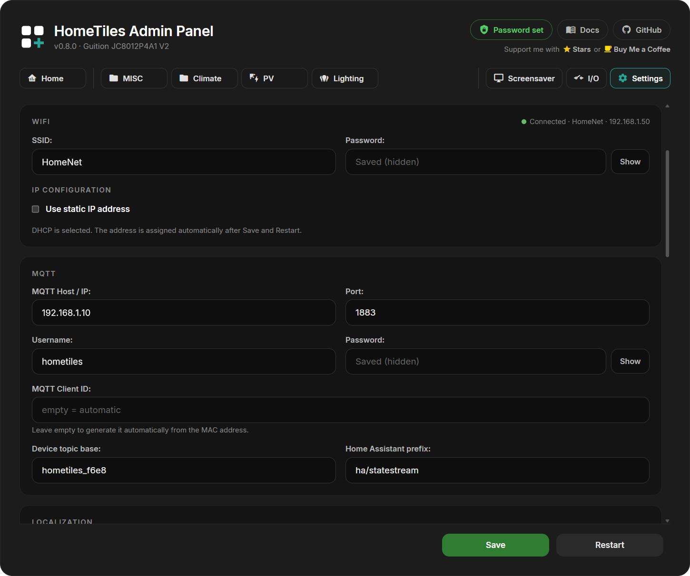
Use Save for the settings form. Restart is a separate action.
Web Admin Password
The Web Admin is open to everyone on your network by default. Enter a new password twice and select Set password to protect every page and API request, including MQTT settings, restart, firmware upload, the file manager, and screenshots. The browser then shows a sign-in page first.
- The password is never sent in plain text: the browser proves it with a one-time challenge, and the display stores only a salted hash.
- Wrong passwords lock the sign-in for an increasing time, up to five minutes.
- Saved WiFi and MQTT passwords and PINs are no longer shown, neither here nor in the WiFi setup hotspot. Enter a new value to change them; an empty field keeps the saved one.
- You stay signed in for 30 days, also after a restart or update of the display. Sign out ends the browser session; Remove password opens the Web Admin to the network again.
- Forgot the password? On the display, open Settings → System → Security and select Remove password.
- When pairing with the HomeTiles Bridge, enter the password in the Bridge setup dialog.
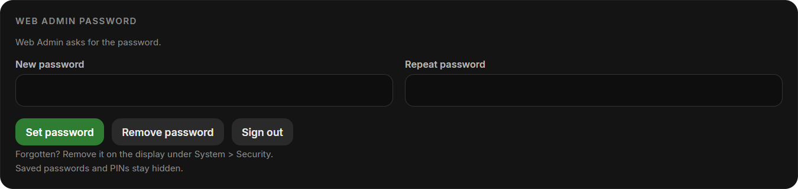
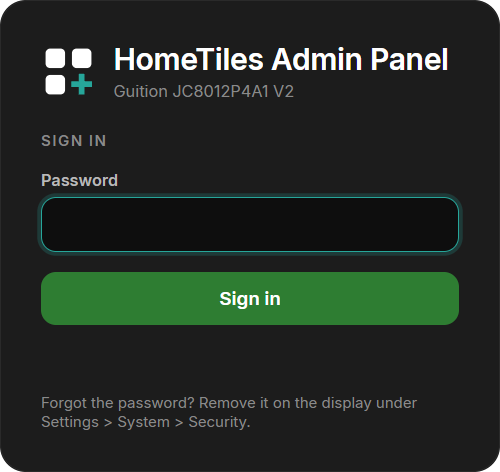
Built-in Camera
Displays with a supported camera show this section. Allow Home Assistant to use the built-in camera is off by default. When enabled, the display captures still images or a live stream only while the HomeTiles Bridge requests them.
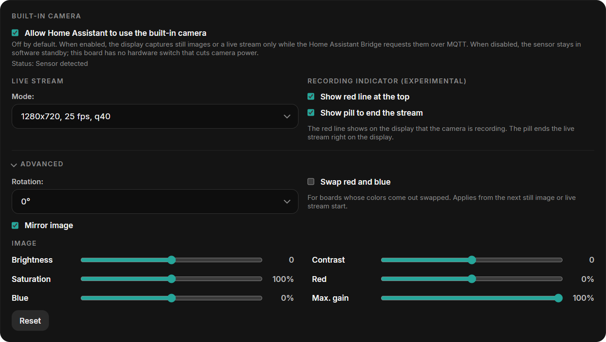
- Mode: resolution, frame rate, and JPEG quality of the live stream. Higher values need more bandwidth.
- Recording indicator: a red line at the top of the display and a pill to end the stream while the camera is in use.
- Advanced: rotation, mirroring, and a red/blue swap for boards whose colors come out swapped.
- Image: brightness, contrast, saturation, red and blue balance, and the maximum gain for dark rooms. Reset restores the defaults.
Local Hardware I/O
Open I/O to configure outputs, relays, or DS18B20 sensors. Only pins available for the selected device are offered. See Local Hardware I/O for setup and wiring.
Import / Export
Export saves folders, tiles, and the screensaver layout in one JSON file. It excludes local I/O assignments and PINs. Older files without screensaver data leave the current screensaver unchanged.
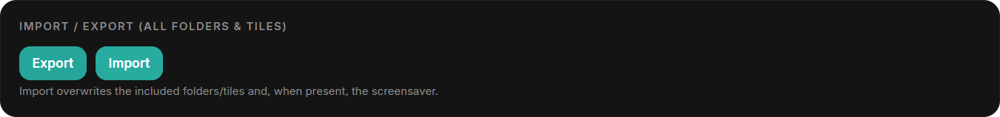
Warning
Import replaces the folders, tiles, and screensaver data contained in the file.
Screenshot & Diagnostics
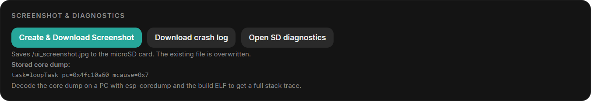
- Create & Download Screenshot: saves and downloads a JPEG of the current screen; requires microSD.
- Download crash log: downloads reset reasons and crash details.
- Open SD diagnostics: runs a short write and read test on the microSD card and shows the report.
- Core dump: download or delete a stored memory snapshot when one is available.
See Reporting a crash for the files and details to include.
Firmware Update
Check for releases or upload the matching OTA .bin in the Firmware section. Follow Firmware Updates for the steps.
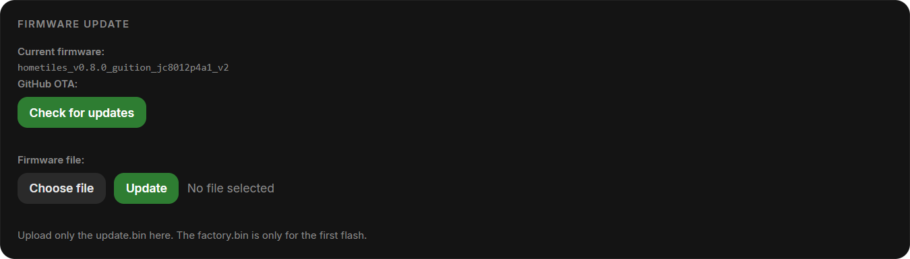
File Manager
With a FAT32 microSD card inserted, use the file manager to upload, download, rename, or delete files and create folders. A card is optional for normal dashboard use.
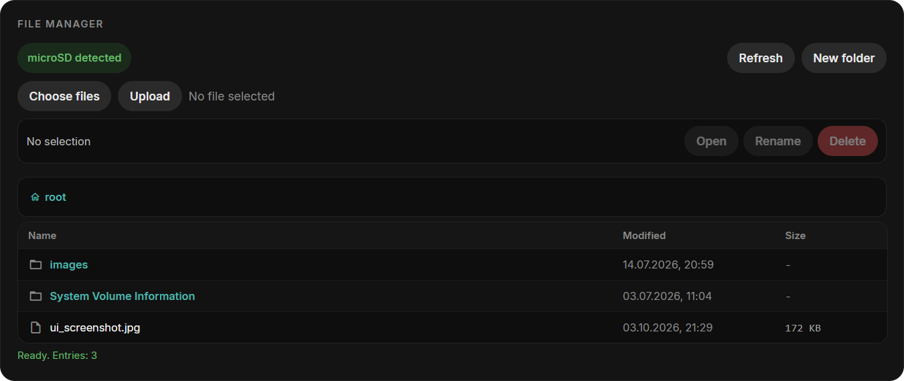